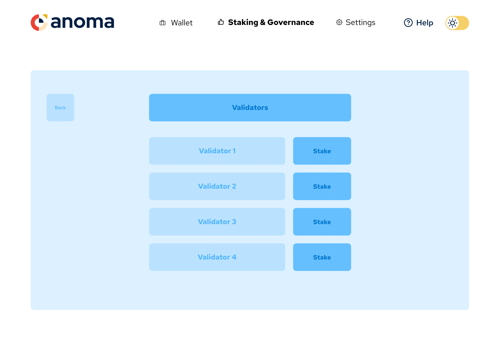

Web Wallet UI and Features
The application is divided to 4 main sections:
- LockScreen
- AccountOverview
- StakingAndGovernance
- Settings
These are further divided to individual screens or flows (comprising several screens) grouping activities that belong together. For example, under StakingAndGovernance we have:
- StakingAndGovernance/Staking - which gives the user the possibility to see all the validators and navigate to a screen where the actual staking is performed.
Each screen listed below is associated with a high level wireframe design to give a visual presentation of the user interface. Each view is named and being referred with that name through out all communication and in the codebase.
This screen represents StakingAndGovernance/Staking view
LockScreen
When the user accesses the wallet for the first time there is a need to create a new account. This screen gives the user to possibility to do so or unlock the wallet by using an existing account.
LockScreen
Wireframe User can:
- can to unlock the wallet by entering the master password
- can to start a flow to create a new account
AccountOverview
This is the most important part of the application and the part where the user spends the most time. Here the user performs the most common tasks such as creating transactions. Only one account is selected as a time and the selected account is indicated here.
AccountOverview
Wireframe User can:
- see the aggregated balance in fiat currency
- can see the currently selected account address
- can navigate to Settings/Accounts for changing the account
- can see a listing of all hold tokens and their logos, balances, names
AccountOverview/TokenDetails
Wireframe User can:
- can see the balance of token in native and fiat currency
- can navigate to AccountOverview/TokenDetails/Receive for receiving tokens
- can navigate to AccountOverview/TokenDetails/Send for sending tokens
- can see a listing of past transaction of the current account and selected token
AccountOverview/TokenDetails/Receive
Wireframe User can:
- see QR code of the address
- see address as a string and copy it by clicking button
AccountOverview/TokenDetails/Send
Wireframe 1 Wireframe 2 Wireframe 3 User can: view 1:
- see the balance of the token in current account
- enter details: transfer amount, recipient address, memo
- can select to perform the transaction as shielded
view 2:
- see a summary of the transaction details
- clear indication whether the transaction is transparent of shielded
- select a gas fee
- see an option in gas fees that is specific for shielded transactions
- see a transaction summary including gas fee
view 3:
- see a confirmation once the transaction is confirmed
- be abel to navigate to see the new transaction in the block explorer
- be able to navigate back to AccountOverview/TokenDetails
StakingAndGovernance
Aside of AccountOverview this is a part that the user is likely visiting quite frequently. All staking and governance related activities are performed here.
StakingAndGovernance
Wireframe User can:
- see a dashboard with the most interesting information regarding staking
- see a dashboard with the most interesting information regarding governance
- can navigate to StakingAndGovernance/Staking for performing staking actions
- can navigate to StakingAndGovernance/Proposals for performing governance actions
StakingAndGovernance/Staking
Wireframe 1 Wireframe 2 Wireframe 3 User can: view 1:
- view a listing of validators
- be able to navigate to aaa for seeing further details about the validator
- select to stake with one of them
view 2:
- select an amount to stake
- see a summary of the staking transaction
view 3:
- see a confirmation of a successful staking with the selected validator
StakingAndGovernance/ValidatorDetails
Wireframe User can:
- can see all relevant details of the validator
StakingAndGovernance/Proposals
Wireframe User can:
- see a listing of all open proposals
- be able to vote for yes, no, no with veto and abstain
- see the current vote share per proposal
- navigate to StakingAndGovernance/Proposals/AddProposal for adding a new proposal
StakingAndGovernance/Proposals/AddProposal
Wireframe 1 Wireframe 2 User can: view 1:
- enter the details (TBD) of the proposal
- see a summary of the proposal
- submit the proposal
view 2:
- see a confirmation of successfully submitted proposal
Settings
This is a part of the application that is visited less often. This is where the user can change settings of select the active account.
Settings
Wireframe User can:
- Navigate to Settings/Accounts
- Navigate to Settings/WalletSettings
Settings/WalletSettings
Wireframe User can:
- see and change the fiat currency to display in various locations in the app where amounts are being displayed in fiat currency
- Default fiat currency is USD
Settings/Accounts
Wireframe User can:
- select an account by clicking it, when it becomes visibly selected
- can navigate to Settings/AccountSettings for changing the settings of certain account
- can navigate to Settings/Accounts/NewAccount/Start for adding a new account to the wallet
Settings/Accounts/NewAccount
Wireframe 1 Wireframe 2 Wireframe 3 Wireframe 4 Wireframe 5 User can:
view 1:
- see a welcome screen that explain the flow
view 2:
- enter an alias to the account
- enter and confirm a password
- select the length of the seed phrase (12 or 24 words)
view 3:
- see a seed phrase that was generated
- copy the seed phrase to clipboard
view 4:
- enter a randomly requested word from the set of words. ("please enter word #5")
view 5:
- see a confirmation that the account was created
- navigate to AccountOverview and so that the newly created account becomes the selected account
Settings/AccountSettings
Wireframe User can:
- Rename the selected account
- display the seed phrase, user is being prompted for a password
- delete account, user is prompted to input a security text to prevent an accidental deletion
- select the network